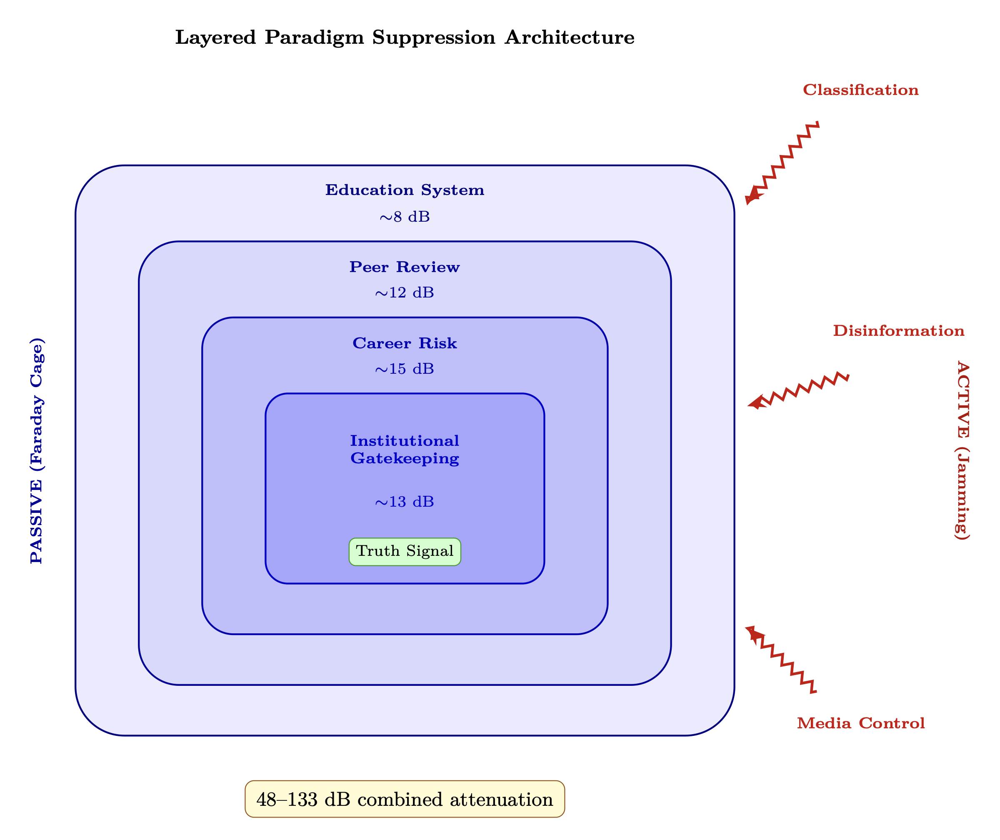
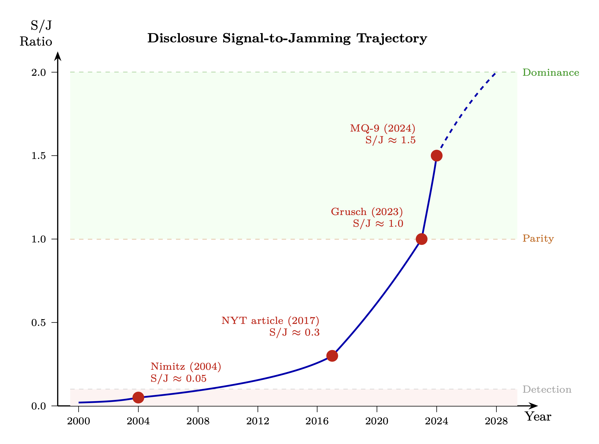

Chapter 13: Paradigm Shielding and Disclosure Architecture
Passive Attenuation, Active Jamming, and the Necessary Veil
KEY FINDINGS — Chapter 13: Paradigm Shielding and Disclosure Architecture
Evidence-tier key: [L1] established/replicated evidence; [L2] grounded extension with moderate uncertainty; [L3] speculative hypothesis; [L4] conceptual/anecdotal.
- Institutional gatekeeping in science is well-documented (Fanelli 2010, Peters & Ceci 1982, Ioannidis 2005); the claim that this functions as a Faraday cage against consciousness-related research is the model’s contribution [L1-L2: documented effect sizes applied to novel framework]
- Combined passive + active suppression estimated at 48-133 dB, with career risk and classification as strongest individual layers [L2-L3: order-of-magnitude analogical estimates grounded in measured effect sizes]
- The S/J ratio for UAP disclosure has risen from <0.01 (pre-2004) to ~0.5-1.0 (2023-2025), approaching parity [L1-L2: based on documented disclosure events and congressional testimony]
- Occam’s Razor is applied asymmetrically: \(10^{500}\) unobservable string landscapes accepted without parsimony objections while single additional fields are rejected [L1: verifiable claim about scientific practice]
- The critical coherence fraction of ~283,000 high-\(Z_0\) individuals could trigger threshold disclosure effects [L2-L3: derived from phased array mathematics]
_________________________________
13.1 RF Analogy Overview
13.1.1 The Core Concept
A Faraday cage is a conductive enclosure that blocks external electromagnetic fields. Signals that would otherwise propagate freely are attenuated or completely blocked. The cage doesn’t destroy the signal—it prevents it from reaching receivers inside.
Scientific materialism functions as a Faraday cage around collective consciousness. The signal (evidence of deeper realities, ancient civilizations, consciousness as fundamental, non-human intelligence) continues to propagate. But the paradigmatic cage blocks these signals from mainstream awareness.
In electronic warfare, jamming deliberately transmits interference to disrupt enemy communications. Effective jamming is architected—not random noise but designed interference with redundant layers and need-to-know partitioning.
The suppression architecture operates on both principles simultaneously. Passive shielding (paradigm cage) attenuates incoming signals without active effort, while active jamming (classification, disinformation, coordinated suppression) deliberately injects interference to maintain information dominance. Together, these form a layered defense-in-depth against paradigm-threatening information.
13.1.2 Rayleigh vs. Ricean Fading
Rayleigh fading: No line-of-sight path; only scattered reflections arriving with random phase.
Ricean fading: A dominant direct path exists alongside reflections.
The materialist paradigm enforces Rayleigh conditions by design: Knowledge is fragmented into siloed disciplines. Research is atomized into narrow studies. Findings are locked behind paywalls, scattered across journals. Each domain has its own jargon and gatekeepers.
Result: No direct line-of-sight to integrated truth. Information arrives only as scattered reflections with random phase, unable to coherently combine.
_________________________________
13.2 Passive Attenuation Model
13.2.1 Shielding Effectiveness
Faraday cage attenuation: \[ SE = 20 \log _{10}\left (\frac {E_{outside}}{E_{inside}}\right ) \text { dB} \] For the paradigm cage: \[ L_{paradigm} = L_{education} + L_{media} + L_{peer} + L_{institutional} \] Each layer adds attenuation.
- Constancy-of-Laws Assumption: The axiom that physical constants and governing equations are identical everywhere and everywhen functions as a foundational shielding layer. By ruling out a priori any density-dependent variation in coupling constants, consciousness-modulated field strengths, or epoch-dependent torsion parameters, this assumption renders the entire RF framework unfalsifiable-by-definition rather than merely unproven — the most effective form of paradigm shielding, because it appears to be a requirement of science itself rather than a cultural choice.
13.2.1.1 Archetypal Attenuation: Symbolic Carrier Suppression The paradigm cage equation above omits a layer that operates below conscious awareness—at the level of myth and archetype. The Proto-Indo-European dragon-slaying motif (Indra/Vrtra, Thor/Jormungandr, Zeus/Typhon, Apollo/Python, Marduk/Tiamat) functions as symbolic carrier suppression: the hero (sky-law transmitter) “kills” the dragon/serpent (earth-resonant carrier signal), relabeling the carrier as chaos requiring destruction.
Adding this archetypal layer to the paradigm cage: \[ L_{paradigm} = L_{education} + L_{media} + L_{peer} + L_{institutional} + L_{archetypal} \] Where \(L_{archetypal}\) operates at the deepest psychological level—embedded in foundational myth, below conscious evaluation. It attenuates serpent-gnosis signals before they reach the matched filter stage, ensuring \(|\rho _{template}| \to 0\) (Section 13.2.6) even for practitioners who bypass institutional layers.
The inversion mechanism: Pre-conquest, serpent = carrier of gnosis (positive symbol aiding signal detection). Post-conquest, serpent = chaos/evil (negative symbol triggering rejection). The signal is unchanged; the matched filter template has been corrupted to reject what it should accept. This is the deepest instance of filter mistuning described in Section 13.2.6—operating at the mythological substrate where cultural identity is formed.
Epistemic note [L1-L2]: The existence of institutional gatekeeping in science is well-documented (Kuhn, Fanelli, Peters & Ceci). The specific claim that this gatekeeping functions as a Faraday cage against consciousness-related research is the model’s contribution.
13.2.2 Scan Blindness
In phased arrays, certain scan angles become “blind” due to impedance mismatch. The array structurally cannot look in those directions.
For paradigm: \[ \theta _{blind} = \arccos \left (\frac {\lambda _{paradigm}}{d_{assumption}}\right ) \] Certain topics (psi, ancient advanced civilizations, consciousness as fundamental) are structural blind spots—the paradigm cannot perceive them without self-destruction.
13.2.3 Rayleigh Fading Model
Received signal in Rayleigh conditions: \[ r = \sqrt {X^2 + Y^2} \] Where X, Y are Gaussian random variables. The signal fluctuates wildly; coherent reception is impossible.
In the knowledge environment: Each piece of information arrives from scattered sources with random phase. No coherent integration occurs. The pattern exists but cannot be perceived.
13.2.4 Disclosure Firewall
Active filtering coefficient: \[ \alpha _{firewall} = \frac {\text {Information blocked}}{\text {Information attempted}} \] Mechanisms: classification, ridicule, career destruction, debunking, funding denial.
13.2.5 Quarantine Thinning
The cage is weakening over time: \[ SE(t) = SE_0 \cdot e^{-t/\tau _{decay}} \] Based on the observed disclosure acceleration from 2004-2025, a rough estimate gives \(\tau _{decay} \approx 15\)–\(30\) years.
As more signals leak through, the paradigm cage thins.
13.2.6 Occam’s Razor as Mistuned Matched Filter
A matched filter maximizes signal-to-noise ratio by correlating the received signal against a known template \(h(t)\). The output SNR is: \[ \text {SNR}_{MF} = \frac {2E}{N_0} \] where \(E\) is signal energy. This is provably optimal—when the template matches the true signal. When the template is mistuned, the filter output degrades as: \[ \text {SNR}_{mistuned} = \text {SNR}_{MF} \cdot |\rho |^2 \] where \(\rho = \int h_{template}(t) \, h_{true}^*(t) \, dt\) is the cross-correlation between the assumed and actual signal templates, with \(|\rho | \leq 1\).
Occam’s Razor, properly applied, is a matched filter tuned to the simplest hypothesis that explains the data. Among competing hypotheses with equal explanatory power, it selects the one with fewer free parameters—an efficient search strategy.
Occam’s Razor abused is a matched filter permanently tuned to “simple materialist explanation,” regardless of the actual signal. When reality is genuinely multi-causal, nonlocal, or consciousness-involving, the template mismatch drives \(|\rho | \to 0\):
- The filter passes noise that happens to look simple (spurious “debunkings” matching the simplicity template)
- The filter rejects the true signal because it doesn’t correlate with the template
- The more complex the truth, the worse the filter performs
This can also be modeled as a complexity ceiling—a low-pass filter on explanation complexity: \[ H(\omega ) = \begin {cases} 1 & \text {complexity} < \omega _c \\ 0 & \text {complexity} \geq \omega _c \end {cases} \] where \(\omega _c\) is the paradigm’s maximum tolerable explanatory complexity. Any structure in reality above \(\omega _c\) is destroyed—the filter doesn’t merely miss it, it actively removes it from the received signal.
Legitimate vs. Abused Occam’s Razor
|
Property | Legitimate Form | Abused Form |
|
Selection criterion | Among hypotheses that equally explain the data | Among all hypotheses regardless of fit |
|
Complexity role | Tiebreaker when explanatory power is equal | A priori rejection threshold |
|
Template | Adaptive—updated as evidence accumulates | Fixed—tuned to materialist simplicity |
|
Effect on SNR | Improves (selects most efficient explanation) | Degrades (rejects true signal when complex) |
|
Analogy | Properly tuned matched filter | Mistuned matched filter |
Self-reinforcing feedback: The mistuned filter narrows what is studied, narrower study confirms the narrow worldview, and the filter tightens further—a positive feedback loop that progressively reduces \(\omega _c\): \[ \frac {d\omega _c}{dt} = -\gamma \cdot (\omega _c - \omega _{paradigm}) \] where \(\gamma > 0\) and \(\omega _{paradigm}\) is the paradigm’s preferred complexity level. The cutoff frequency converges exponentially toward the paradigm baseline, progressively excluding more of reality.

_________________________________
13.3 Active Jamming Model
13.3.1 Jamming Equation
Signal-to-Jamming ratio: \[ \frac {S}{J} = \frac {P_s G_s}{P_j G_j} \cdot \left (\frac {R_j}{R_s}\right )^2 \] Where:
- \(P_s, G_s\) = signal power and gain (truth sources)
- \(P_j, G_j\) = jammer power and gain (disinfo sources)
- \(R_s, R_j\) = distances
The jammer wins when \(S/J < 1\).
13.3.2 Compartmentalization
Information is partitioned into cells with no cross-communication: \[ I_{total} = \bigcup _{i=1}^{N} I_i \quad \text {where} \quad I_i \cap I_j = \emptyset \] Compromise of cell \(i\) reveals only \(I_i\); full picture requires all \(N\) cells.
Effective compartments: \(N > 100\) in deep-black programs.
13.3.3 Broadband Noise Jamming
Disinformation acts as broadband noise across the information spectrum: \[ N_{disinfo}(f) = N_0 \quad \forall f \in [f_{min}, f_{max}] \] This raises the noise floor across all topics, making any specific truth harder to distinguish.
13.3.4 Deceptive Jamming
Insert false targets (controlled opposition, fake whistleblowers, absurd claims): \[ s_{received} = s_{truth} + \sum _k a_k s_{deceptive,k} + n \] The receiver cannot distinguish truth from deception without additional information.
Epistemic note [L2-L3]: Deceptive jamming detection risks unfalsifiability — any contrary evidence can be reinterpreted as jamming. This limitation is acknowledged in Section 13.9.2.
13.3.5 Counter-Counter Measures
The architecture adapts to counter-jamming (disclosure efforts): \[ \frac {dJ}{dt} = \alpha \cdot C - \beta \cdot J \] Where \(C\) = counter-jamming intensity, \(\alpha \) = adaptation rate.
FOIA requests, whistleblower protections, congressional hearings trigger adaptive response—new classification, new debunking, new ridicule.
_________________________________
13.4 Predictions
Passive Shielding Predictions:
P1: Paradigm-threatening research should face disproportionate barriers.
P2: Cross-disciplinary synthesis should be actively discouraged.
P3: Breakthrough perceptions should cluster outside institutional environments.
P4: The cage should show signs of weakening (more anomalies reaching mainstream).
P5: Individuals inside the cage should be unaware of what they’re not receiving.
Active Jamming Predictions:
P6: Secrecy architecture should show designed compartmentalization.
P7: Disclosure attempts should trigger adaptive countermeasures.
P8: Noise floor should increase around genuine revelations.
P9: Deceptive signals should outnumber truth signals.
P10: The system should have redundancy—defeating one layer reveals another.
Combined Predictions:
P11: Passive and active suppression should correlate—topics with strongest paradigm shielding should also receive the most active jamming (e.g., UAP, consciousness research, alternative archaeology).
P12: Cage weakening (\(SE(t)\) decline) should trigger compensatory jamming increases (\(dJ/dt > 0\)), observable as intensified debunking campaigns following disclosure events.
P13: The combined system should show diminishing returns—as passive shielding thins, active jamming costs should escalate nonlinearly, eventually exceeding sustainable resource allocation.
P14: Occam’s Razor should be invoked asymmetrically—applied strictly against paradigm-challenging hypotheses but relaxed for paradigm-consistent ones. Hypotheses adding unobserved entities (dark matter, extra dimensions, multiverse) should be accepted when paradigm-consistent, while hypotheses adding comparable entities (consciousness field, torsion coupling, nonlocal information) should be rejected as “violating parsimony” when paradigm-challenging.
_________________________________
13.5 Evidence: Passive Shielding
13.5.1 Archaeology Suppression Cases
Out-of-Place Artifacts (OOPARTS)
Virginia City skull (1866)
- Human skull in Miocene stratum, quietly archived
Hueyatlaco site (Mexico)
- Stone tools dated 250,000+ years (Steen-McIntyre career destroyed)
Dorchester vessel (1851)
- Metal vase in 600 million year rock, dismissed as hoax
Pattern
- Anomalous finds either ignored, attributed to hoax, or career-destroying
Forbidden Archaeology (Cremo & Thompson, 1993)
- Documented 100+ cases of evidence contradicting human evolution timeline
- Evidence: Archaeological finds systematically filtered if they don’t fit paradigm
“Knowledge filter”
- Anomalies not published, not taught, forgotten
Career Examples
|
Researcher | Finding | Career Consequence |
|
Virginia Steen-McIntyre | Hueyatlaco dating | Denied tenure, blacklisted |
|
Michael Cremo | Anomalous human origins | Labeled pseudoscientist |
|
Robert Schoch | Sphinx water erosion | Marginalized in Egyptology |
13.5.2 Journal Publication Bias Studies
Quantified Bias
Fanelli (2010)
- Positive results published at 3x rate of negative; rate increasing over time
- In dB terms: a 3x publication ratio corresponds to ~5 dB systematic attenuation of negative/anomalous results
Open Science Collaboration (2015)
- Only 36% of psychology studies replicated
Begley (2012)
- Only 6 of 53 “landmark” cancer studies reproducible
Fabrication and Fraud Growth
- 2024 meta-analysis of ~75,000 biomedical studies: an estimated 14% contain partially fabricated data (Bordewijk et al., Anaesthesia)
- Northwestern University analysis (2025): fraudulent science publications growing faster than legitimate research output, with retraction rates accelerating
- These findings strengthen the replication crisis evidence: when ~14% of published work may be fabricated, the paradigm’s filtering function is not merely biased but actively degraded
Gatekeeping Mechanisms
- 1.
- Peer review anonymity: Reviewers can block without accountability
- 2.
- Citation metrics: Journals reject paradigm-challenging papers (reduce impact factor)
- 3.
- Funding requirements: Papers must align with funded research agendas
- 4.
- Retraction asymmetry: Anomalous findings retracted faster than fraudulent mainstream findings
Impact on Paradigm-Challenging Research
| Field | Paradigm Challenge | Publication Difficulty |
| Consciousness | Psi phenomena | Major journals refuse to review |
| Medicine | Homeopathy, energy healing | Dismissed a priori |
| Physics | Cold fusion, overunity | Career suicide to pursue |
| Archaeology | Alternative chronology | Not peer reviewed |
13.5.3 Academic Career Destruction Cases
Pattern Analysis
-
Scientists crossing paradigm boundaries face:
- 1.
- Ridicule from colleagues
- 2.
- Funding denial
- 3.
- Publication rejection
- 4.
- Career termination
Documented Cases
|
Name | Field | Transgression | Consequence |
|
Rupert Sheldrake | Biology | Morphic resonance | Nature editorial calling for book burning |
|
Jacques Benveniste | Immunology | Water memory | Nature “investigation,” career ended |
|
John Mack | Psychiatry | Alien abduction research | Harvard investigation (vindicated) |
|
Peter Duesberg | Virology | Questioned HIV-AIDS link | Funding terminated, ostracized |
|
Brian Josephson | Physics | Interest in psi | Nobel laureate publicly mocked |
IIT Pseudoscience Letter (2023)
- 124 academics signed open letter calling Integrated Information Theory “pseudoscience” (published in response to IIT proponents’ work; covered by Nature)
- IIT is a leading mathematical theory of consciousness. The open letter contained both substantive scientific criticisms of IIT’s axioms and broader paradigm-boundary enforcement — the latter component demonstrates active enforcement in consciousness research
Shielding Effect
- Most researchers self-censor (don’t even attempt paradigm-crossing work)
- Survivors are extremely determined outliers
- The career destruction cases serve as exemplary punishment, suppressing far more research than the individual cases suggest
13.5.4 Peer Review Gatekeeping Research
Sokal Hoax (1996)
- Physicist submitted nonsense paper to postmodern journal
- Accepted and published—proved lack of rigorous review
- Reverse implication Rigorous papers can be rejected for ideological reasons
Inter-Reviewer Agreement
- Meta-analysis of 45 studies on peer review reliability: average inter-reviewer correlation \(r = 0.34\) (Bornmann, Mutz & Daniel, 2010)
- An \(r = 0.34\) is barely above chance, meaning reviewer decisions are substantially random
- When the gatekeeping filter operates near the noise floor, decisions are biased toward paradigm-confirming work: ambiguous quality assessments default to “reject” for anomalous findings and “accept” for paradigm-consistent work
Replication Crisis Analysis
- Many “established” findings don’t replicate
- Ioannidis (2005) “Why Most Published Research Findings Are False”
- Paradigm-confirming findings less scrutinized than paradigm-challenging ones
Measured Bias
- Mahoney (1977) Reviewers rated methodology higher when results confirmed their expectations
- Peters & Ceci (1982) Resubmitted already-published papers to same journals under unknown names—8 of 9 rejected In dB terms: 89% rejection rate corresponds to ~10 dB attenuation based on institutional affiliation alone
- Tomkins et al. (2017) Double-blind review reduces bias by 25%
13.5.5 Academic Self-Censorship
FIRE 2024 Faculty Survey (Foundation for Individual Rights and Expression; 6,269 faculty across 55 U.S. institutions):
- 25% of faculty self-censor in their published research
- 15% avoid researching certain topics entirely
- 33% self-censor in classroom lectures
In dB terms: if 25% of researchers suppress their findings, the effective signal power reaching publication is attenuated by \(10\log _{10}(1/0.75) \approx 1.2\) dB from self-censorship alone—before any peer review or editorial filtering.
Times Higher Education 2024 (global survey):
- 68% of academics worldwide report self-censoring to some degree
- 80% in the United States
Significance: These surveys quantify what the chapter otherwise only asserts—that “most researchers self-censor.” The attenuation is passive (no external agent acts), making self-censorship the innermost layer of the paradigm cage: the shield the individual builds around their own transmission.
13.5.6 Occam’s Razor Asymmetry in Practice
The complexity ceiling model (Section 13.2.6) predicts that Occam’s Razor should function as selective paradigm protection rather than uniform methodology. Examination of mainstream physics reveals a striking asymmetry:
Paradigm-consistent ontological additions (accepted):
- Dark matter: An unobserved entity constituting ~27% of the universe, invoked to explain galactic rotation curves. No direct detection despite decades of experiments (LUX, XENON, PandaX). Ontological cost: an entire class of undetected particles
- Dark energy: An unobserved entity constituting ~68% of the universe, invoked to explain accelerating expansion. No theoretical explanation from first principles. Ontological cost: 95% of the universe is invisible and undetected
- String theory: Requires 6-7 extra spatial dimensions (unobservable), predicts \(\sim 10^{500}\) possible vacuum states (the “landscape”), and has produced no testable prediction in 50 years. Ontological cost: effectively infinite unobservable structure
- Many-worlds interpretation: Postulates an infinite number of unobservable branching universes created at every quantum measurement. Ontological cost: literally infinite unobservable universes
Paradigm-challenging ontological additions (rejected as “violating parsimony”):
- Consciousness as fundamental: A single additional ontological category. Rejected for “multiplying entities”
- Torsion field coupling: A single additional field interaction predicted by Einstein-Cartan theory. Rejected for “no known mechanism”
- Nonlocal biological information: A single additional information channel. Rejected for “violating known physics”
- Ancient advanced civilizations: A single historical revision. Rejected because “simpler explanations exist” (even when simpler explanations don’t fit the data)
The asymmetry is quantifiable: Mainstream physics accepts \(10^{500}\) unobservable landscapes and infinite unobservable universes without “parsimony” objections, while rejecting a single additional field or ontological category as excessive. This is not parsimony—it is a mistuned matched filter passing signals that correlate with the materialist template while rejecting signals that do not, regardless of relative ontological cost.
This selective enforcement confirms P14 and demonstrates that Occam’s Razor, as practiced, functions as paradigm shielding rather than neutral methodology.
_________________________________
13.6 Evidence: Active Jamming
13.6.1 Whistleblower Testimony Patterns
UAP/UFO Whistleblowers
|
Whistleblower | Position | Key Claims | Corroboration |
|
David Fravor | Navy pilot | 2004 Nimitz encounter | Radar data, multiple witnesses |
|
Luis Elizondo | AATIP director | Pentagon UAP programs | Program documentation released |
|
David Grusch | Intelligence officer | Crash retrieval programs | Congressional testimony under oath |
|
Bob Lazar | Claimed S-4 employee | Reverse engineering (1989) | Employment records disputed |
Consistency Analysis
-
Multiple independent sources describe:
- Multi-decade recovery/reverse engineering programs
- Compartmentalized access (need-to-know beyond Top Secret)
- Intimidation of witnesses
- Disinformation campaigns to discredit leakers
Jamming Architecture Signature
- Immediate debunking attempts upon disclosure
- Character assassination of whistleblowers
- “Neither confirm nor deny” official responses
- Controlled partial disclosure (limited hangouts)
Interpretation
- Multiple independent whistleblowers describing the same compartmentalized structure confirms P6 (designed compartmentalization)
- The pattern of immediate debunking + character attacks is the adaptive countermeasure predicted by \(dJ/dt = \alpha C - \beta J\) (Section 13.3.5): disclosure attempts (\(C\)) trigger proportional jamming response (\(J\))
- The S/J ratio for whistleblower signals remains < 1 because \(P_j G_j >> P_s G_s\) — institutional jammer power vastly exceeds individual signal power
13.6.2 FOIA Response Analysis
Response Pattern Studies
| Request Type | Typical Response | Wait Time |
| Mundane records | Release with redactions | 30-90 days |
| UAP-related | Glomar response or denial | 6+ months |
| Mind control programs | Heavy redaction | 1-5 years |
| Exotic technology | “No records” or classification cite | Indefinite |
Glomar Response
- “Neither confirm nor deny existence of records”
- Originally for submarine program (Glomar Explorer)
- Now standard response for paradigm-sensitive requests
Black Vault Analysis (Greenewald)
- John Greenewald: 3+ million pages released through FOIA over 25+ years
-
Patterns observed:
- Critical documents heavily redacted
- “Missing” documents for key periods
- Different agencies give contradictory responses
- Appeal success rate much higher than initial denial (system counts on requester giving up)
Interpretation
- FOIA response patterns demonstrate broadband noise jamming (Section 13.3.3): the noise floor \(N_{disinfo}(f) = N_0\) is raised uniformly across topics through redaction, delay, and Glomar responses
- Contradictory inter-agency responses function as deceptive jamming (Section 13.3.4): \(s_{received} = s_{truth} + \sum _k a_k s_{deceptive,k}\) — the receiver cannot distinguish truth from bureaucratic noise without extraordinary effort
- The appeal success pattern reveals a deliberate S/J strategy: initial denial counts on low \(P_s\) (requester giving up), making the effective jammer power much higher than the formal classification would suggest
13.6.3 Black Budget and Classification
Black Budget Programs
FY2023 intelligence budget
- $90+ billion (disclosed portion)
Black programs
- Estimated 2-3x disclosed budget
Classification expansion
- Exponential growth in classified documents since 1945
Disclosed vs. Estimated
| Category | Disclosed (2023) | Estimated Hidden |
| Intelligence | $90.8 billion | Unknown |
| Special Access Programs | Classified | Est. $50-100B |
| Unacknowledged SAPs | Classified | Est. $20-50B |
| Private contractor black | Not public | Est. $50B+ |
Audit Trail
- DOD failed audit for 6 consecutive years (2018-2023)
- $35 trillion unaccounted in HUD + DOD adjustments (Skidmore & Fitts, 2019)
- Catherine Austin Fitts (former HUD official) documenting persistent financial anomalies
Compartmentalization Structure
- SAPs: Special Access Programs (acknowledged)
- USAPs: Unacknowledged SAPs (denied)
- Waived USAPs: Congressional oversight excluded
- Estimated 10-50 compartments for deepest programs
Historical Suppression Examples
| Program | Years Hidden | What Was Classified |
| Manhattan Project | 3 years | Nuclear weapons |
| MKULTRA | 20+ years | Mind control research |
| COINTELPRO | 15+ years | Domestic surveillance |
| STARGATE | 23 years | Remote viewing research |
| Advanced Aerospace Threat ID | 5+ years | UAP investigations |
Disclosure Resistance
- FOIA requests routinely denied on “national security” grounds
- Whistleblowers prosecuted (Snowden, Assange, Manning)
- Classification as tool for paradigm protection, not just security
Interpretation
- The compartmentalization structure directly instantiates the information partitioning equation: \(I_{total} = \bigcup _{i=1}^{N} I_i\) where \(I_i \cap I_j = \emptyset \) (Section 13.3.2)
- With \(N > 100\) effective compartments, compromise of any single cell reveals only \(I_i / I_{total}\) — a vanishingly small fraction of the full picture
- Audit failures and unaccounted funds represent the financial infrastructure required to maintain \(P_j G_j >> P_s G_s\) — the jammer must be funded to maintain power advantage over truth signals
13.6.4 Counter-Intelligence History
COINTELPRO (1956-1971)
- FBI program to “disrupt, misdirect, discredit” domestic political organizations
- Tactics: Infiltration, psychological warfare, harassment, wrongful imprisonment
- Targeting: Civil rights, antiwar, socialist, women’s liberation movements
- Same tactics documented against UFO researchers, alternative health advocates
Documented Disinformation Operations
| Operation | Target | Methods |
| MKULTRA | Domestic population | LSD experiments, mind control |
| Mockingbird | Media | CIA journalists/assets |
| Northwoods | Public opinion | Proposed false flag (rejected) |
| CHAOS | Antiwar movement | Infiltration, disruption |
UFO-Specific Programs
Robertson Panel (1953)
- CIA recommended debunking UFOs through mass media
Project Blue Book
- Officially for investigation; actually for public relations
Condon Committee (1966-1969)
- Predetermined negative conclusion, used to close official research
Interpretation
- COINTELPRO and UFO-specific programs demonstrate the counter-counter measures equation: \(dJ/dt = \alpha C - \beta J\) (Section 13.3.5) — each disclosure attempt triggers adaptive jamming response
- The Robertson Panel’s explicit recommendation to debunk through mass media is a documented instance of raising \(P_j G_j\) (jammer power x gain) to maintain S/J < 1
- The progression from infiltration to media control to academic gatekeeping shows redundant jamming layers — defeating one layer (P10) reveals the next, consistent with designed architecture
13.6.5 Media Coordination Evidence
CIA-Media Relationships
Operation Mockingbird (1950s-1970s+)
- CIA relationships with major media figures
Church Committee (1975)
- Documented 50+ US journalists on CIA payroll
Carl Bernstein (1977)
- “The CIA and the Media”—detailed 400+ US journalists with CIA relationships
Modern Coordination Indicators
|
Phenomenon | Pattern | Interpretation |
|
Narrative synchronization | Same phrases appear across outlets within hours | Coordinated talking points |
|
Deplatforming timing | Multiple platforms act simultaneously | Coordinated enforcement |
|
Fact-checker funding | Traced to same foundations/funders | Centralized narrative control |
|
Algorithm changes | Affect disfavored content simultaneously | Coordinated suppression |
UFO Topic Evolution
- Pre-2017: “Giggle factor” enforced—serious coverage career-ending
- Post-2017 (NYT article): Suddenly acceptable to discuss
Interpretation
- Controlled disclosure—narrative released when approved
13.6.6 Recent Disclosure Dynamics (2023-2025)
AARO and Official Investigations
- All-domain Anomaly Resolution Office (AARO) received 757 UAP reports through 2023
- AARO Historical Record Report (March 2024): identified 21 cases as “genuine anomalies” while maintaining official position of “no evidence of extraterrestrial technology”
- The simultaneous acknowledgment of anomalies and denial of their implications is the dual-signal pattern predicted by deceptive jamming (Section 13.3.4)
Schumer-Rounds UAP Disclosure Amendment
- Bipartisan amendment modeled on JFK Assassination Records Collection Act
- Would have mandated government-wide UAP record disclosure with eminent domain over private contractor materials
- Stripped from FY2024 NDAA during conference committee under defense industry lobbying
- The stripping itself demonstrates the adaptive counter-counter measures predicted by \(dJ/dt = \alpha C - \beta J\): a legislative counter-jamming effort (\(C\)) triggered proportional defensive response (\(\alpha C\)), resulting in increased classification protection (\(J\))
Congressional Hearings
- House Oversight Committee UAP hearings (2023-2024) with testimony from Grusch, Fravor, Graves
- Senate Armed Services and Intelligence committees conducting classified briefings
- Multiple members of Congress publicly stating they believe information is being withheld
MQ-9 Reaper Orb Encounter (October 2024)
- Infrared video released showing metallic orb matching speed and trajectory of MQ-9 drone over Middle East
- First officially released video showing UAP interaction with military asset in real-time
- Represents a measurable increase in signal power \(P_s\) bypassing classification barriers
S/J Trajectory Assessment
| Period | Estimated S/J | Key Driver |
| Pre-2004 | < 0.01 | Near-total information suppression |
| 2004-2017 | ~0.05 | Nimitz encounter, internal pressure |
| 2017-2020 | ~0.1-0.3 | NYT article, AATIP revelation |
| 2020-2023 | ~0.3-0.5 | Congressional hearings, Grusch testimony |
| 2023-2025 | ~0.5-1.0 | Legislative action, accumulating evidence |
The S/J ratio is approaching parity. When S/J > 1, the truth signal dominates jamming and cascade disclosure becomes possible (P12).

_________________________________
13.7 Synthesis
13.7.1 Paradigm Shield Effectiveness
Methodological caveat: The dB estimates below are order-of-magnitude analogical translations, not calibrated measurements. Where documented effect sizes exist (publication bias ratios, rejection rates, self-censorship surveys), we derive rough bounds. Otherwise, ranges are placeholder estimates intended to illustrate relative magnitudes. These values should be treated as hypothesis-generating, not as empirical findings.
Evidence-Grounded Estimates
|
Layer | Mechanism | Evidence Basis | Estimated Attenuation |
|
Education | Materialist indoctrination | No direct measure; cultural saturation | 3-10 dB |
|
Self-censorship | Researcher suppression | FIRE 2024: 25% suppress -> ~1.2 dB from censorship alone | 1-5 dB |
|
Peer review | Publication filtering | Peters & Ceci: 89% reject -> ~10 dB; inter-reviewer \(r = 0.34\) | 5-10 dB |
|
Publication bias | Positive-result preference | Fanelli: 3x ratio -> ~5 dB | 3-8 dB |
|
Career risk | Self-censorship + destruction | Documented cases; most self-select out | 10-20 dB |
|
Ridicule | Social enforcement | “Giggle factor,” IIT letter | 3-10 dB |
|
Occam’s Razor abuse | Complexity ceiling / mistuned filter | Asymmetric enforcement (Section 13.5.6) | 3-10 dB |
|
Passive Total |
|
| 28-73 dB |
Active Jamming Estimates
| Layer | Mechanism | Estimated Attenuation |
| Classification | Information lockdown | 10-30 dB |
| Disinformation | Noise floor elevation | 5-15 dB |
| Media coordination | Narrative steering | 5-15 dB |
| Active Total | 20-60 dB |
Combined estimate: 48-133 dB, with significant uncertainty. The key insight is not the absolute number but the relative ranking: career risk and classification are the strongest individual layers, while self-censorship and publication bias operate as pervasive background attenuation.
13.7.2 Architecture Map
Combined Suppression System Components
+-----------------+ | Policy Level | | (Intelligence) | +--------+--------+ | +----------------+----------------+ | | | +------v------+ +------v------+ +-----v------+ | PASSIVE | | ACTIVE | | ADAPTIVE | | (Paradigm | | (Jamming | | (Counter- | | Cage) | | Arch.) | | Counter) | +------+-------+ +------+-------+ +-----+------+ | | | +------v------+ +------v------+ +-----v------+ | Education | | Classification| | dJ/dt | | Peer Review | | Disinformation| | Response | | Career Risk | | Media Control | | to Leaks | | Self-Censor | | FOIA Denial | | | +-------------+ +--------------+ +------------+
13.7.3 Signal-to-Jamming Ratio Assessment
Current State
- Historical S/J < 0.1 (jamming dominated)
- Current S/J approximately 0.5-1.0 (approaching parity)
- Threshold S/J > 2 (truth signal dominates) not yet reached
Signs of Weakening
- 1.
- Alternative media bypassing gatekeepers
- 2.
- Replication crisis exposing failures
- 3.
- Increasing whistleblower disclosures
- 4.
- Congressional UAP hearings breaking taboos
- 5.
- Growing public distrust of institutions
- 6.
- Schumer-Rounds amendment (even its defeat raised public awareness)
- 7.
- Academic self-censorship becoming a studied phenomenon (meta-awareness)
Model Prediction
- When combined paradigm shielding drops below ~20 dB effective margin, cascade disclosure becomes possible
- The “20 dB margin” is a qualitative threshold concept tied to the link budget framework (Chapter 14, Section 14.9): it represents the point where accumulated gains from disclosure events, alternative media, and declining institutional trust exceed the remaining suppression capacity
- Current trajectory suggests approach within years to decades
_________________________________
13.8 The Necessary Veil: Impedance Mismatch and Protection
13.8.1 Not All Concealment is Parasitic
A critical nuance: Some attenuation of disclosure was protective, not controlling.
The impedance mismatch problem:
- Humanity’s collective \(Z_0\) was too low to handle full disclosure
- Full truth at full power would overwhelm unprepared consciousness
- Like connecting a high-voltage source to a low-impedance load—burns out
- Some attenuation was NECESSARY, not just parasitic \[ P_{survivable} = P_{source} \cdot \left (\frac {Z_0^{human}}{Z_0^{truth}}\right )^2 \] When human collective \(Z_0\) « truth signal impedance, most power reflects or damages.
13.8.2 The Veil as Impedance Protection
Protective functions of the veil:
- Attenuates signal to survivable levels
- Provides time for gradual \(Z_0\) increase
- Prevents catastrophic system overload
- Allows individual pace of awakening
The problem: Control systems EXPLOITED this legitimate need for their own purposes. What began as protection became control infrastructure.
13.8.3 Parasitic vs. Protective: A Distinction
|
Protective Veil | Parasitic Control |
|
Attenuates to prevent overwhelm | Attenuates to maintain ignorance |
|
Temporary—lifted as ready | Permanent—actively maintained |
|
Serves individual development | Serves controller extraction |
|
Facilitates impedance matching | Suppresses impedance growth |
|
Decreases naturally as \(Z_0\) rises | Increases in response to awakening |
Current situation: A mix of both—legitimate protection exploited by parasitic overlay.
13.8.4 Awakening as Impedance Rising
Disclosure becomes possible as collective \(Z_0\) rises: \[ \text {Disclosure Capacity} \propto Z_0^{collective} \]
| Collective \(Z_0\) Level | Disclosure Possible |
| Very low | Only mythology, indirect hints |
| Low | Fiction, speculation “safely” framed |
| Medium | Academic study, edge researchers |
| Higher | Official acknowledgment, partial truth |
| High | Full disclosure without mass trauma |
The threshold mathematics (from Chapter 8 Phased Array):
For collective effects requiring coherent fraction \(f_c\): \[ f_c \approx \sqrt {\frac {T}{N}} \] For Earth (~8 billion): ~283,000 coherent, high-\(Z_0\) individuals could trigger threshold effects (illustrative estimate for \(T = 10\); see Chapter 8 derivation).
13.8.5 Disclosure Strategy Implications
The S/J framework suggests disclosure advocates should:
- 1.
- Concentrate signal power rather than broadcasting broadly (\(P_s G_s\) maximization through focused, high-credibility testimony)
- 2.
- Exploit jammer resource constraints — adaptive countermeasures have finite budget, so multiple simultaneous disclosure fronts stress the system
- 3.
- Build processing gain in the audience (\(G_{integration}\)) through sustained educational campaigns rather than shock revelations
13.8.6 The Paradox Resolved
Why didn’t full disclosure happen already?
- 1.
- Collective \(Z_0\) was too low (would have caused damage)
- 2.
- Control systems exploited this gap
- 3.
- Awakening movements gradually raise \(Z_0\)
- 4.
- As \(Z_0\) rises, disclosure becomes safe AND inevitable
- 5.
- The veil naturally thins as it’s no longer needed
The path forward:
- Individual \(Z_0\) raising (wisdom + shadow work)
- Community coherence building (high-\(Z_0\) networks)
- Protective veil naturally decreases
- Parasitic overlay exposed and rejected
- Full disclosure follows \(Z_0\) sufficiency
_________________________________
13.8.7 Competing Hypotheses and Adjudication Criteria
|
Hypothesis | Explanation for Observed Suppression Patterns | Distinguishing Indicator | Decision Rule |
|
Normal institutional conservatism | Slow paradigm shifts reflect standard academic inertia | Similar rejection rates for all disruptive claims | If true, no anomaly-specific attenuation premium |
|
Political economy/media incentives | Suppression follows advertiser/regulatory risk optimization | Suppression intensity tracks revenue/regulatory exposure | If true, changes follow market/regulatory shifts |
|
Coordinated paradigm shielding model (this chapter) | Multi-layer attenuation intentionally maintains narrative lock | Cross-domain synchronized suppression with repeated signatures | If true, correlated events exceed chance and single-domain explanations |
Adjudication requirement: classify each major case against all three hypotheses before assigning it to active shielding.
_________________________________
13.9 Assumptions, Limitations, and Falsification
13.9.1 Key Assumptions
- 1.
- Suppression is systematic, not incidental: The attenuation of paradigm-threatening information reflects structured, reinforcing mechanisms rather than isolated coincidences
- 2.
- Attenuation layers are approximately additive: Passive and active suppression contribute independently and can be meaningfully summed in dB
- 3.
- The passive/active distinction maps onto real dynamics: Paradigm shielding (internalized worldview filtering) and active jamming (deliberate suppression operations) are meaningfully separable
- 4.
- The veil was initially protective: Some degree of information attenuation served a legitimate developmental function before being exploited
- 5.
- Collective \(Z_0\) is a meaningful aggregate: Population-level impedance can be treated as a collective variable influencing disclosure capacity
- 6.
- Occam’s Razor asymmetry is systematic: The selective enforcement of parsimony (strict against paradigm-challenging hypotheses, relaxed for paradigm-consistent ones) reflects structural paradigm protection rather than incidental variation in reviewer judgment
13.9.2 Limitations
- 1.
- dB estimates are analogical, not calibrated: No instrument measures “paradigm attenuation” in decibels; values are order-of-magnitude translations from documented effect sizes
- 2.
- Selection bias in evidence: Suppression cases are catalogued precisely because they are dramatic; quiet acceptance of paradigm-challenging work (which does occur) is underrepresented
- 3.
- No first-principles derivation of \(\tau _{decay}\): The quarantine thinning time constant is asserted, not derived from underlying dynamics
- 4.
- Deceptive jamming detection risks unfalsifiability: If any contradictory evidence can be labeled “deceptive jamming,” the model becomes unfalsifiable; this limitation must be acknowledged explicitly
- 5.
- Protective-vs-parasitic lacks quantitative boundary: The distinction between protective veil and parasitic control is qualitative; no metric cleanly separates them
- 6.
- Historical evidence is retrospective: Classification and suppression patterns are documented after the fact; real-time observation of the full architecture is impossible by design
13.9.3 Falsification Criteria
|
ID | Criterion | Current Status |
|
F1 | Paradigm-challenging research faces equal acceptance rates in blinded review | Not met: Peters & Ceci (1982) showed 89% rejection of previously published work under unknown names |
|
F2 | Cross-disciplinary synthesis is equally rewarded as narrow specialization | Not met: academic incentive structures overwhelmingly reward specialization |
|
F3 | FOIA processing times are equal for paradigm-sensitive and mundane requests | Not met: systematic delays documented for UAP, mind control, and exotic technology requests |
|
F4 | Whistleblowers show no coordinated discrediting pattern | Not met: consistent character assassination, employment retaliation, and media campaigns documented |
|
F5 | Official disclosure programs produce comprehensive, transparent reports | Partially met: AARO reports acknowledge anomalies but maintain “no ET evidence” despite incomplete investigation |
|
F6 | Model predicts no weakening, but disclosure events accelerate | Not yet testable: model predicts weakening and current trajectory shows acceleration, consistent with \(SE(t)\) decline |
Additional mechanism-level falsification criteria:
- F7 — No paradigm-shielding effect. If controlled experiments demonstrate that exposure to well-evidenced anomalous data produces belief updating at rates predicted by Bayesian models with no attentional or cognitive penalty, the shielding mechanism is falsified.
- F8 — No institutional amplification. If analysis of information gatekeeping institutions (peer review, media, education) shows no systematic bias against torsion-compatible or consciousness-related evidence beyond expected base rates of rejection, the institutional-shielding thesis is unsupported.
- F9 — No disclosure-readiness correlation. If population-level disclosure acceptance shows no correlation with individual or community coherence levels (\(\sigma \)), the impedance-based disclosure-timing model fails.
- F10 — Paradigm shifts follow standard Kuhnian dynamics. If historical analysis of scientific paradigm shifts shows that anomalous-evidence suppression durations are fully explained by standard sociological models (Kuhn, Lakatos) with no residual requiring active shielding, the active-suppression component is unnecessary.
_________________________________
End of Chapter 13: Paradigm Shielding and Disclosure Architecture
Evidence Synthesis
- Detailed source sections: 13.5, 13.6, 13.6.5, 13.7.
Assumptions
- Detailed source sections: 13.9, 13.9.1.
Limitations
- Detailed source sections: 13.9, 13.9.2.
Falsification
- Detailed source sections: 13.9, 13.9.3.
Predictions
- Detailed source sections: 13.4.
Strategic Relevance
Why It Matters
- Paradigm-shielding decay monitoring. The shielding-attenuation model (Section 13.3) predicts measurable decay in paradigm-lock effectiveness as coherence rises. Tracking anomalous-acceptance rates in scientific publishing, media coverage, and public surveys provides a leading indicator of disclosure-window opening.
- Information environment as contested battlespace. The Faraday-cage metaphor implies that information environments are not neutral channels but active shielding structures. Counter-shielding operations (Chapter 14) must account for the cage’s frequency-dependent attenuation — not all information penetrates equally.
- Disclosure timing optimization. Appendix A, Scenario B identifies disclosure timing as a critical variable. The shielding model provides quantitative inputs: disclosure succeeds when \(\sigma _\text {population}\) exceeds the paradigm cage’s attenuation threshold, producing net positive signal-to-noise in public discourse.
- Weaponized Occam detection. The simplicity-bias exploitation mechanism (Section 13.5) predicts specific rhetorical signatures when Occam’s razor is deployed as a suppression tool rather than a heuristic. Automated detection of these signatures in media and academic discourse would provide early warning of active paradigm enforcement.
_________________________________
What To Watch
- Monitor chapter prediction thresholds, proxy indicators, and coherence trend changes.
Boundaries of Use
- Apply this chapter as model-conditional doctrine; treat speculative elements as hypothesis overlays.